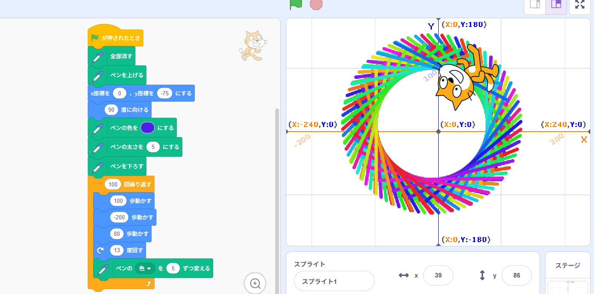
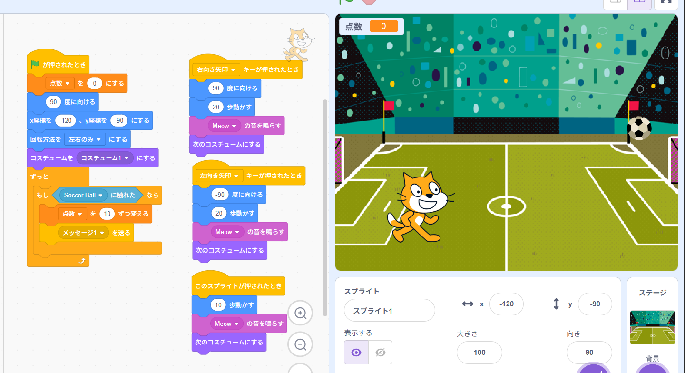

1週目のレポート ： 公大高専１年実習I-1
4a班20番 ゆっきー
第1週目
1-1 サイエンスアート

1.内容
最初のscratchを用いた実習は、scratch内で線を用いて円形の図形を描くプログラムを自分で行う。 2.感想
自分が数値や色を好きなように変化させることで、毎回違った形や模様をつくることができてとても面白かった。
1-2 ゲーム

1.内容
scratchを使用してボールが上から落ちてきて、キャッチするゲームのプログラム作ったり、自分の好きなようにアレンジしたりした。 2.感想
キャラクターの動きを自分でプログラムして操作できるのが面白かった。また、自分の好きなようにプログラムや外観をアレンジできて創造性があると思った。
1-3 ホームページ作成
私のホームページ
1.内容
githubを使用し、自分自身のホームページをプログラムして、自分自身のことを紹介する文を作成する。 2.感想
実際にcodeを使用してプログラムするのがはしめてだったので面白かった。また、プログラムの基礎について少し知れた。
各ページへのリンク
1週目のレポート
2週目のレポート
3週目のレポート
私のホームページ